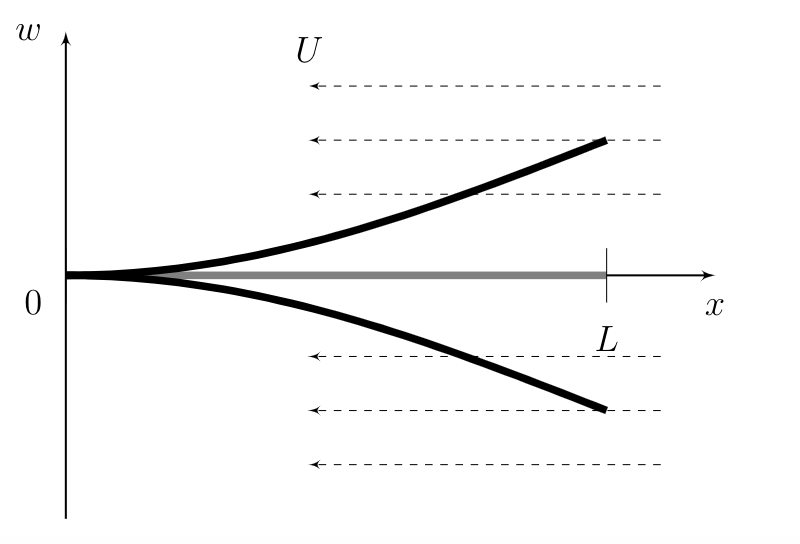
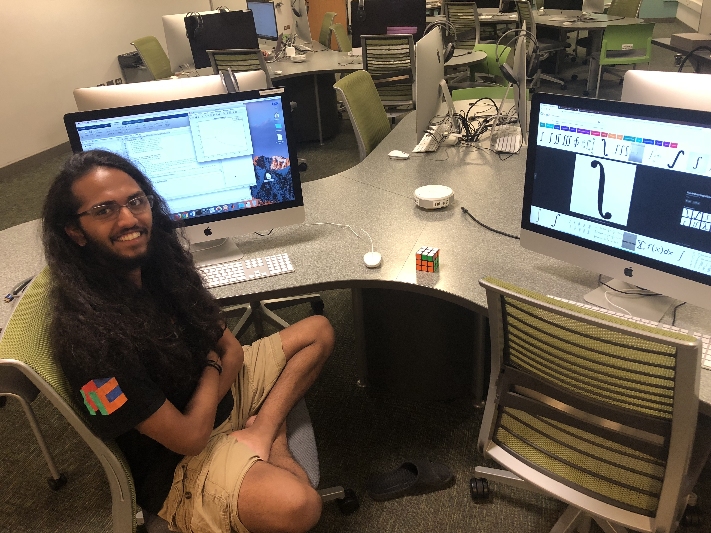

I have been working with Professor Leslie Smith on a project about Rayleigh-Bernard Convection (RBC). This is an idealized scenario with a fluid in between two plates - a hot plate on the bottom and a cold plate on top. The hotter the fluid is, the less dense therefore more buoyant it is. The colder the fluid is, the more dense and therefore less buoyant it is. Thus, in this scenario we see that the hotter fluid at the bottom will want to float up to the top while the colder fluid at the top will want to sink to the bottom (this is not always true, but the idea is that this is clearly and unstable situation and the fluid is gonna wanna move if the bottom is hot enough relative to the top).
The non-dimensionalized equations for these is given by the
\[
\begin{cases}
&\mathbf{u}_t + \mathbf{u}\cdot\nabla \mathbf{u} = - \nabla P + \nu_* \nabla^2 \mathbf{u} + T \hat{y}\\
&T_t + \mathbf{u} \cdot \nabla T = \kappa_* \nabla^2 T\\
&\nabla \cdot \mathbf{u} = 0 \\
\end{cases}
\]
where we have that $\mathbf{u}$ is the velocity field, $T$ is the temperature, and $P$ is the pressure - all understood to have been scaled by appropriate constants. Also,
\[
\begin{cases}
&\nu_* = \left( \frac{16 Pr}{Ra}\right)^{1/2} \\
&\kappa_* = \left( \frac{16 }{RaPr}\right)^{1/2} \\
&Ra = \frac{g \alpha_V \Delta T H^3}{\nu \kappa} \quad Pr = \frac{\nu}{\kappa}
\end{cases}
\]
Those last two constants are the important Rayleigh and Prandtl numbers respectively. There is also the Nusselt number, $Nu$, which represents the the relative strength of convective heat transport. A hotly debated topic is if $Nu \sim Ra^{1/2}$ (the ultimate scaling) or $Nu \sim Ra^{1/3}$ (the classical scaling). Although the word "ultimate" is cool, that is unfortunately not enough to confirm that $Nu \sim Ra^{1/2}$. It seems like this will be debated for decades, but there are variations of RBC that are definitely worth looking at for their practical applications as well as seeing if similar scaling laws hold. All this math talk without at least one animation would be no good. So here it is:
Liquid Crystals
In summer of 2019, I worked with Professor Franziska Weber on liquid crystals. You've likely interacted with liquid crystals without even knowing it - an LCD screen is a Liquid Crystal Display. A liquid crystals is an inbetween state - it's sort of a liquid and sort of a solid. In a liquid, all the particles are randomly aligned while in a solid, all the particles are completely aligned. For a liquid crystal, we can think of the particles as being "vaugely aligned." Now that we understand that, we can move on to the physical model of the liquid crystals we used.
Given a large splotch of liquid crystals, we can look at a very tiny portion of it and see in general which direction all the particles in that portion are facing. We can identify this direction with a unit vector $n$ which we call the director. What we desire is to model this director at every point in the liquid crystal and see how it changes as we evolve in time. Thus, we have that $n$ is dependent on both space and time - $n(x,t)$. One may notice that a vector has an inherent direction but the liquid crystals themselves don't and thus a vector pointing in the direction $-n$ would also be equally valid. This symmetry that is apparent with the director must be preserved by any model we use for liquid crystals. A model that does that is the Q-tensor model.
Given a director $n(x,t)$ we can define a Q-tensor
\[ Q(x,t) = s(x,t) \left( n(x,t) n(x,t)^T - \frac{1}{d} I_d \right) \]
where $d = 2,3$ is the dimension of the space we are dealing with and $I_d$ is the identity matrix of dimension $d \times d$. The $s(x,t)$ function is what's called a scalar order parameter which is a scalar valued function that gives an idea of how well a patch of liquid crystals are aligned. The idea behind the Q-tensor is we encode the director into $Q$ and then evolve it in time. Thus if we want to know the director at any point in the splotch of liquid crystals or at any later time, we can find the Q-tensor at that space/time and decode the director (by finding the eigenvectors). The model we used to evolve the liquid crystals is governed by the following equations:
\[
\begin{cases}
&u_t + B(u,u) = - \nabla p + \eta \Delta u + \nabla \cdot \sigma - \mathcal{H}\nabla Q \\
&\nabla \cdot u = 0 \\
&Q_t + u \cdot \nabla Q - S = M\mathcal{H} \\
&q_t = P(Q): Q_t
\end{cases}
\]
where
\[
\begin{cases}
&P(Q) := \frac{aQ - b(Q^2 - \frac{1}{2}tr(Q^2)I) + c tr(Q^2)Q}{\sqrt{2\left(\frac{a}{2}tr(Q^2)-\frac{b}{3}tr(Q^3)+\frac{c}{4}tr^2(Q^2)+A_0\right)}} \\
&\mathcal{H} = L \Delta Q - qP(Q) \\
&\sigma(Q,\mathcal{H}) = Q\mathcal{H} - \mathcal{H}Q - \xi (\mathcal{H}Q + Q\mathcal{H}) - \frac{2\xi}{3}\left(\mathcal{H} - \frac{1}{d}tr(\mathcal{H})I\right)+2\xi(Q:H)Q \\
&B(u,v) = u \cdot \nabla v + \frac{1}{2} (\nabla \cdot u)v \\
&D = \frac{1}{2}(\nabla u + \nabla u^T) \\
&W = \frac{1}{2}(\nabla u - \nabla u^T) \\
&S = WQ - QW + \xi(QD + DQ)+ \frac{2\xi}{3}D - 2\xi(D:Q)\left(Q + \frac{1}{d}I\right)
\end{cases}
\]
These equations are the full equations for flows of liquid crystals. Notice that the first two equation are Navier-Stokes-esque with the second equation being an incompressibility condition and the first equation (using the incompressibility) can be written as $u_t + (u \cdot \nabla) u = -\nabla p + \eta \Delta u + \Lambda(Q,\mathcal{H})$, which is a Navier-Stokes-esque equation.
For simplicity, we first implemented a numerical scheme for the liquid crystals with no flow. This corresponds to the system
\[
\begin{cases}
&Q_t = M (L\Delta Q - q P(Q)) \\
&q_t = P(Q):Q_t
\end{cases}
\]
We were able to jump of some pre-existing research for semi-discrete schemes of this same system to develop and implement a fully discrete scheme (which I will not describe or discuss here). We were able to prove that our scheme was energy stable. We wish to soon extend our work to the system with flow. Currently, I am working on this and am trying to get an idea of this Navier-Stokes-esque nature of the model. Previous work on numerical methods for Navier-Stokes is very helpful and once we can settle on a suitable mesh and discretizations for certain terms, we should be able to provide some fully discrete schemes.
2022 Edit: Turns out we did not do this exactly in the end, but I did get my Master's Thesis on this research and also got some of it into a paper: arXiv:2012.00278
Dynamics of the Inextensible Inverted Flag with Piston-Theoretic Forcing Term
In the inverted flag system, a thin metal beam is fixed on one end and free to move on the other. Fluid flows from the free end to the fixed end, inducing motion in the beam. The model is of current interest in several applications, including the design of piezolectric harvesting devices. See below for a figure of the system.

The beam is of length $L$ and the fluid flows at speed $U$. A full model of the system would involve a system of PDEs with Navier Stokes for the flow of the fluid coupled with another equation for the motion of the beam. This however is computationally and mathematically expensive. Engineers who look at this system have use tools from Piston Theory which simplifies the interaction between the fluid and the beam to derive just a single equation which models the motion of the beam. We looked at the model proposed by Dowell and McHugh for the inextensible inverted flag - that is a model which preserves the arclength.
\[ \begin{cases}
w_{tt} +\mathbf{A}(w)(x,t) = -\beta(w_t - Uw_x) & \text{in } (0,L) \times (0,T)\\
w = w_x = 0 & \text{in } \{0\}\times (0,T) \\
w_{xx} = w_{xxx} = 0 & \text{in } \{L\} \times (0,T) \\
w(0) = w_0(x), w_t(0) = w_1(x) & t=0, x \in [0,L] \\
\end{cases} \]
\[ \begin{align}
\mathbf A (w) =\underbrace{-D\partial_x\big[(w_{xx})^2w_x \big]+D\partial_{xx}\big[w_{xx}\big(1+(w_x)^2\big)\big]}_{\text{nonlinear stiffness}} \\[1 ex]
+\underbrace{w_x\left[-\int_0^x\left((w_{x t})^2+w_{x tt}w_{x}\right) d\xi\right]}_{\text{nonlinear inertia}}\\[1 ex]
+\underbrace{w_{xx}\int_x^L\Big[\int_0^{\xi_2} \big((w_{x t})^2)w_{x tt}w_{x}\big)d\xi_1\Big]d\xi_2}_{\text{nonlinear inertia}}-
\end{align}
\]
To finally model the system compuationally, we conducted a modal analysis where we found an orthonormal basis of modes (also called shape functions) such that the shape at any single time could be written as a linear combination of these modes.
\[ w(x,t) = \sum_{i=1}^n q_i(t) s_i(x) \]
The time dependent coefficients $q_i(t)$ are found through an infinite system of ODEs. To actually conduct numerics for the system, we truncate the system to finitely many, $N$, equations
$$m \left[ q_j'' + \sum_{i=1}^N \left[q_i''(q_i)^2+(q_i')^2q_i\right]\mathcal I_{iiij}\right] + D q_j k_j^4 + D \sum_{i=1}^N q_i^3\left[\mathcal S_{iiij}+\mathcal S_{jiii}\right] = -\beta q_j' + \beta U \sum_{i=1}^N q_i \gamma_{ij}$$
This is just the $j^{th}$ line of the system of ODEs. This is a second order, nonlinear, and implicity system of $N$ equations which through a reduction of order produces a system of $2N$ equations. Using MATLAB's inbuilt $\texttt{ode15i}$ ODE solver we could then solve numerically for the $q_i(t)$ and then take the linear combination with the shape functions to recover a numerical system to the PDE.
We found in our results that a certain regime of behavior known as flutter where the beam oscillates periodically was not found. It is known that the inverted flag in real life actually does flutter, but it seemed that our simulations were unable to capture it. However, we did see a certain bifurcation point where as we varied the flow speed, $U$, that the beam would change from damping to equilibrium to reaching a nontrivial deflected state. Further, this bifurcation point appeared to be independent of the initial condition. When the beam reached the nontrivial deflected states, there were contributions from multiple modes, not just a single mode. Finally, we also saw that the modal simulations were unable to conserve the inextensibility condition. We saw that the arc length was not conserved for certain regimes of $U$ and $\beta$.
Here's me at my favorite spot in the computer lab that summer doing research.
